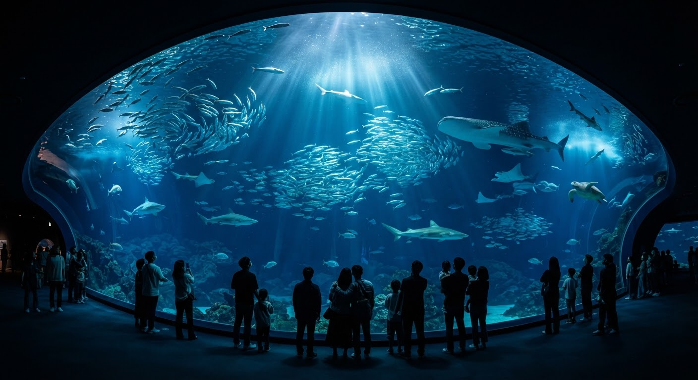

딥블루 오션
대형 수조의 상어와 가오리, 수중 퍼포먼스를 가까이서 만나보세요.
AQUAFOLIO MARINE SANCTUARY
빛이 닿는 산호초에서 고요한 심해까지. 해양 생명의 다양한 풍경을 따라 나만의 관람을 시작해 보세요.

대형 수조의 상어와 가오리, 수중 퍼포먼스를 가까이서 만나보세요.
산호와 열대어가 함께 만드는 작은 생태계를 발견합니다.
벨루가와 펭귄의 서식 환경을 살펴보는 전시 구성입니다.
어둠 속에서 천천히 유영하는 해파리와 빛의 전시.
피라루쿠와 담수 생물이 만드는 또 다른 물속 풍경.
서울 송파구 올림픽로 300 일대의 관람 공간을 가정한 디자인 예시입니다. 운영시간·주소·주차 조건은 실제 운영 정보로 바꾸어 사용해 주세요.
화면의 운영시간은 평일 10:00–20:00, 주말 10:00–21:00이며 입장 마감은 폐장 1시간 전입니다.